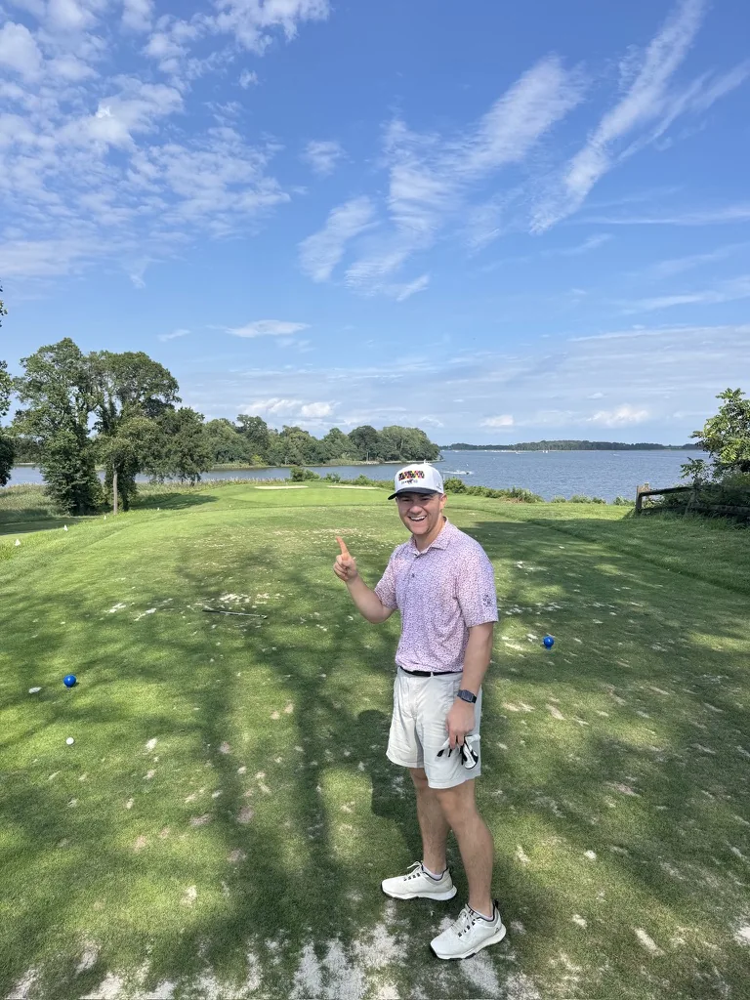
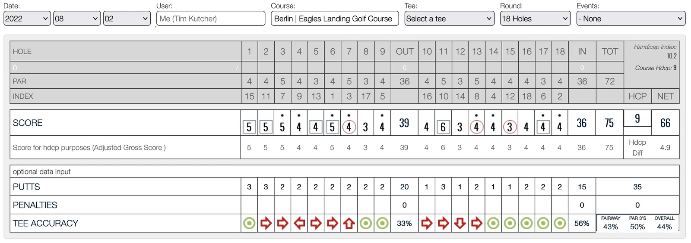

Sports
sports are fun
Baseball
Some highlights from my time playing college baseball at Johns Hopkins.
Running
Half marathon8:30 /mi
PR
5K8:07 /mi
Half marathon9:12 /mi
12 mile8:53 /mi
5K8:14 /mi
5 mile9:11 /mi
Half marathon10:19 /mi
12 mile9:51 /mi

Hole in one.
